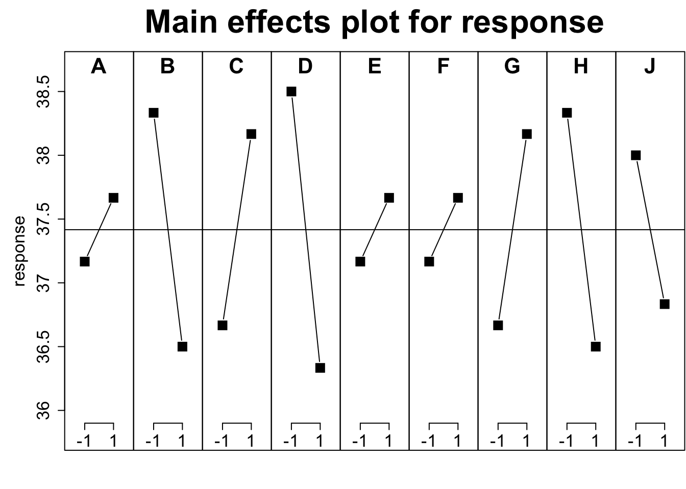

坑 5 实验
5.1 实验设计原则
试验设计一般是面向高年级本科生与研究生开的课程，但讲的都比较抽象。什么随机化、均匀性什么的道理都明白，但真到科研里面基本还是要依赖查表与软件分析。也正是因为如此很多人都是照葫芦画瓢来做，软件告诉哪个好就用哪个，在这种情况下软件实际充当了水晶球，你信就是了。
《Statistics for experimenters》的第一章是值得所有试验学科人读一下的，因为George Box 在第一章里没有扯什么随机化、均匀性，而是聊了下认识论。开篇第一句就是“知识就是力量”，解决问题实际就是一个认识模型演进的过程。具体来说是一个归纳-演绎不断往复的过程，数据起了中介作用。例如下面这个认识过程：
（模型）每天都一样
（演绎）今天车会停在原位
（数据）车不在
（归纳）有人偷车
（模型）车丢了
（演绎）车不在原位
（数据）车又回来了
（归纳）有人偷了车还回来了
不得不说我还是头一回发现认知过程可以这样描述的，具体到试验，这个过程就成了（模型）想法 ->（演绎）实验设计 ->（数据）结果分析 ->（归纳）结论或新想法。这大概是试验设计能上升到的最高理论高度了。
好了，不扯了，这本书非常适合读，但并不适合练。因为作者虽然用了很多很直观的解释方法让读者明白原理，但并未涉及软件层面。当然，提供代码也是最近才开始在技术书籍中流行的，这本书描绘了一个清晰的试验设计与分析框架，而我下面说的是结合R的一些从问题视角的实战。
现实生活中需要试验设计的场景一般都是多因素多水平寻优问题，翻译成人话就是 \(y = f(x)\) 中，y代表了你期望最优的东西，x代表了会对y产生影响的自变量，如果你的问题可以抽象成 \(y = f(x)\)，那就可以通过构建模型来解决。试验设计主要关心的是方差分析这个视角，简单说就是y的变异可以拆分成不同x之间的独立变异或交互作用的线性组合。通过方差分析可以找到对y影响最大的x或所有x的影响方式，了解了影响方式，寻优什么的就比较简单了。
一般而言，想找出多因素的最优组合，第一步是要确定哪些因素重要而哪些因素不重要，这是PB设计的应用场景。在不考虑交互作用的前提下，通过PB设计的表头进行两水平试验，然后进行方差分析并可视化就可以筛选出重要因素了。PB设计的试验次数一定是4的倍数，而且最大适合因子数会比试验次数少1。打个比方，我打算找出9个因素中哪个影响目标最大，那么我的试验次数至少选12，下面是个演示，这里我们使用 FrF2包：
suppressMessages(library(FrF2))
pb(12,nfactors = 9)## A B C D E F G H J
## 1 -1 1 -1 1 1 -1 1 1 1
## 2 -1 -1 1 -1 1 1 -1 1 1
## 3 1 -1 -1 -1 1 -1 1 1 -1
## 4 1 -1 1 1 -1 1 1 1 -1
## 5 -1 1 1 1 -1 -1 -1 1 -1
## 6 1 1 -1 1 1 1 -1 -1 -1
## 7 -1 1 1 -1 1 1 1 -1 -1
## 8 1 -1 1 1 1 -1 -1 -1 1
## 9 1 1 1 -1 -1 -1 1 -1 1
## 10 1 1 -1 -1 -1 1 -1 1 1
## 11 -1 -1 -1 1 -1 1 1 -1 1
## 12 -1 -1 -1 -1 -1 -1 -1 -1 -1
## class=design, type= pb这里面1与-1分别代表两个水平，当然试验设计牵扯到分辨率问题，可以理解为对该试验设计的评价，分辨率高，能区分的影响就更细致，可以用FrF2包中的GR函数来计算。需要注意的是，FrF2包也可以用 FrF2 函数来进行两水平试验设计，这里是分辨率高时是可以考察交互作用的。
那么当你收集了数据，该如何分析呢？FrF2包实际继承了 DoE.base 包的S3对象类型，你只需要用 add.response 增加你的试验结果到设计出的S3对象上，然后就可以用方差分析或线性回归进行分析了。结果同样可以用MEPlot函数来进行可视化。当然，也可以用halfnormal函数来评价因子影响。
plan.annotated <- pb(12,nfactors = 9)
response <- c(35, 36, 38, 39, 37, 36, 39, 37, 41, 32, 42, 37)
plan.resp <- add.response(plan.annotated, response)
MEPlot(plan.resp, abbrev = 5, cex.xax = 1.6, cex.main = 2)
summary(lm(plan.resp))## Number of observations used: 12
## Formula:
## response ~ A + B + C + D + E + F + G + H + J
##
## Call:
## lm.default(formula = fo, data = model.frame(fo, data = formula))
##
## Residuals:
## 1 2 3 4 5 6 7 8 9 10
## -1.167 1.667 -1.167 1.667 -1.667 1.167 1.167 -1.167 1.667 -1.667
## 11 12
## 1.167 -1.667
##
## Coefficients:
## Estimate Std. Error t value Pr(>|t|)
## (Intercept) 37.4167 1.0172 36.784 0.000738 ***
## A1 0.2500 1.0172 0.246 0.828781
## B1 -0.9167 1.0172 -0.901 0.462615
## C1 0.7500 1.0172 0.737 0.537701
## D1 -1.0833 1.0172 -1.065 0.398432
## E1 0.2500 1.0172 0.246 0.828781
## F1 0.2500 1.0172 0.246 0.828781
## G1 0.7500 1.0172 0.737 0.537701
## H1 -0.9167 1.0172 -0.901 0.462615
## J1 -0.5833 1.0172 -0.573 0.624220
## ---
## Signif. codes: 0 '***' 0.001 '**' 0.01 '*' 0.05 '.' 0.1 ' ' 1
##
## Residual standard error: 3.524 on 2 degrees of freedom
## Multiple R-squared: 0.6853, Adjusted R-squared: -0.7307
## F-statistic: 0.484 on 9 and 2 DF, p-value: 0.8174在这里PB设计实际上是一种预选法，如果结果显示某些变量影响显著，那么事实上就可以针对这些变量进行进一步的精细筛选，其余的变量可以直接固定为一个水平进行进一步设计。PB法在工业届用的比较多，但你应该想到了，如果只是进行变量选择，为啥不用随机森林或lasso？其实都可以，但这些方法不是设计而更多是数据分析通用方法，设计上除了最重要的随机性也是要考虑各因子贡献或者说重复数尽量平衡些的，否则会过分偏重某个因子，或者干脆配对或组成区组。像这样不做预设去设计对各个因子都公平，如果有预设或现实条件不允许，也可以裂区设计。
当选出重要因素时，下一步常见是正交试验或响应面分析，用来优选参数。正交表这玩意我在书中没找到，文献里用得多的也是亚洲人，老外统一用析因试验来进行考察。其实正交表的设计原理就是用尽量少的步骤遍历掉因子空间，这样进行一定次数试验就可以发现最优组合。R中的实现基本都在DoE.base 包里，这个包内置了一堆可以直接调用的正交表，可以根据需求进行查询。例如我有6个因素，水平数分别是2，3，3，2，2，6，然后我只打算做不超过54次试验，这时可以直接调用show.oas函数进行查询，给出的正交表随意选一个就可以继续。
show.oas(nruns = c(0, 54), nlevels = c(2, 3, 3, 2, 2, 6), showmetrics = TRUE)## no suitable resolution IV or more array found
## 5 orthogonal arrays found
## name nruns lineage GR GRind regular SCones A3 A4
## 78 L36.2.13.3.2.6.1 36 3.00 3.00 FALSE 6 45.3 158.4
## 81 L36.2.10.3.8.6.1 36 3.18 3.18 FALSE 0 130.3 737.2
## 83 L36.2.9.3.4.6.2 36 3.00 3.00 FALSE 17 82.3 338.2
## 87 L36.2.3.3.9.6.1 36 3.18 3.00 FALSE 12 73.8 300.2
## 88 L36.2.3.3.2.6.3 36 3.00 3.00 FALSE 37 35.6 73.1
## A5 A6 A7 A8
## 78 426 1010 1753.2 2306.8
## 81 3063 11096 31380.8 68828.1
## 83 1025 2828 5507.5 7780.0
## 87 912 2404 4354.2 5793.4
## 88 120 125 63.5 13.9这里我们选分辨率略高的L36.2.10.3.8.6.1，从名字上看，这是一个36次试验表，可以包含10个两水平，8个三水平与1个六水平因子，这也是唯一一个分辨率高于3，可以排除交互作用的设计方法。这里我反复提到分辨率，实际上就是一种考察试验设计合理性的指标，分辨率3一般指只能区分没有交互作用的各因子贡献差异，高于3就可以区分一定的因子交互作用，可以用GR去计算一个广义分辨率并用oa.design来进一步优化这个设计，因为其实符合正交表只是众多选择的一个子集，不过根据优化方法的不同，优化时间也不太一样。
oa.design(L36.2.10.3.8.6.1, nlevels = c(2, 3, 3, 2, 2, 6), columns = "min34")## A B C D E F
## 1 1 1 3 1 2 2
## 2 2 3 2 2 1 1
## 3 1 3 2 1 2 6
## 4 2 1 3 2 1 3
## 5 2 2 3 1 1 2
## 6 1 1 1 2 2 6
## 7 2 2 1 2 2 3
## 8 1 3 3 1 1 5
## 9 1 3 2 2 1 2
## 10 2 3 3 1 2 3
## 11 2 3 1 1 1 4
## 12 2 2 2 2 1 4
## 13 2 1 2 1 2 4
## 14 1 3 1 2 2 1
## 15 2 3 1 1 2 2
## 16 1 2 1 2 1 6
## 17 2 2 1 2 1 5
## 18 1 2 1 1 2 4
## 19 2 1 3 2 2 1
## 20 1 2 2 2 2 2
## 21 2 1 2 1 1 6
## 22 1 3 3 2 2 4
## 23 1 2 3 1 1 1
## 24 1 1 3 2 1 4
## 25 2 2 2 1 2 1
## 26 1 1 1 1 1 1
## 27 1 3 1 1 1 3
## 28 1 2 3 2 2 5
## 29 1 1 2 1 1 5
## 30 1 2 2 1 1 3
## 31 2 1 1 1 2 5
## 32 2 3 3 2 1 6
## 33 2 3 2 2 2 5
## 34 1 1 2 2 2 3
## 35 2 1 1 2 1 2
## 36 2 2 3 1 2 6
## class=design, type= oa使用这个函数你就不用费力去套正交表了，直接可以用输出的设计方案，记得要说明你的分辨率优化方案。如果你坚持套正交表，一定要理解如何去套，因为正交表的排列是很讲究的，特别是你要考虑交互作用的影响。如果一个表最多14个因子而你就设计了14个因子，那么分辨率不会超过3。正交设计的分析与前面PB设计是一致的，都是沿用添加响应，然后方差分析或线性分析随意来就是了，DoE.base 包为design这个对象类型设置了lm与aov方法。
在进行数据分析时，有时会遇到方差分析与线性回归的区别问题，打比方你用线性回归来做分析，会有审稿人问你lack of fit检验有没有做。这个检验实质上也是个F检验，用来衡量线性模型之外残差里分组变异与纯误差变异的比值，如果分组变异还是比较大，那么线性假设可能就不合理。
不过，目前试验设计结果分析更精细的会用响应面分析。顾名思义，响应面有点梯度下降迭代寻优的意思，而且如果是曲面通常考虑了二阶甚至更高阶的交互作用。在R中的实现是通过 rsm 包来进行的，这个包也是囊括了设计与分析两个部分，设计部分也有常见的 Box-Wilson Central Composite Designs 与Box-Behnken designs，分析部分自然还是基于lm的。同样，对于CCD设计，也提供了ccd.pick来选择好的设计，这里好自然意味着一些表征设计均衡的统计量。因为rsm 包小品文写的很清楚了，我就略过演示了。如果你面临多响应同步优化问题，那么desirability包考虑一下有没有，这个包其实是定义了一个多响应的联合满意度作为目标统计量，然后用响应面分析进行寻优，对于组学研究是有启发的。另外说个小八卦，狭义正交表也就是田口设计其实最初是两响应优化，只不过另一个响应是无法控制的噪音，田口搞了个信噪比来解决问题，熟悉了这套统计量构建策略，你也应该能做到根据实际情况构建指标体系。
其实试验设计分析是可以用所有符合\(y = f(x)\)的模型来操作的，说白了就是参数寻优。但试验设计更独特的点就在设计上，更广义地讲，A/B测试等纯计算试验也可以套用试验设计原理，这里要区分清楚设计与分析，设计不合理，分析会很头痛。如果再扩展些，观察研究的试验设计相比控制实验更关注配对或策略抽样。总之试验设计并不是什么水晶球，其原则从来都很清楚，只是后来流派出的太多，术语也越来越晦涩。然后你就会在网上看到哪个软件能做哪个分析的讨论了，其实这情况在工科可能更严重些，例如混料配比的三角坐标系设计就完全是另一套，不过万变不离其宗，说白了还是个响应面分析。